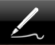

Drawing Lines and Points in Draw Mode

With a name like GraphSketcher, you might find yourself wanting to sketch some graphs! For that, use Draw mode. To get into Draw mode, just tap the Draw tool in the toolbar. (The Draw tool is the skinny pen drawing the line.)
While in Draw mode, you have several ways of making points (and connecting them with lines) to quickly bring your graph to life:
Drag across the canvas to draw a freehand line. GraphSketcher does its best to create a smooth line that matches the one you drew.
To create a line point-by-point, tap once for each point. (A line is drawn between them automatically.) To finish the line, tap the last point a second time.
To create an individual point (without a line): tap the canvas, then tap the newly created point. The first tap will create the point and the second will finish drawing so that you don't make a line with your next tap. If the point doesn't quite land where you want, drag your finger around before letting go in order to adjust it.
If you draw a point on top of an existing line, the point will be added to the line.
Once you’ve created a line or a point, you can change them with the Line Style or Point Style Info popover.